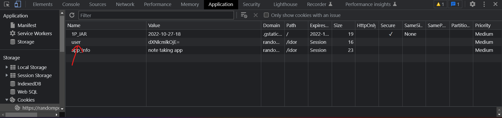
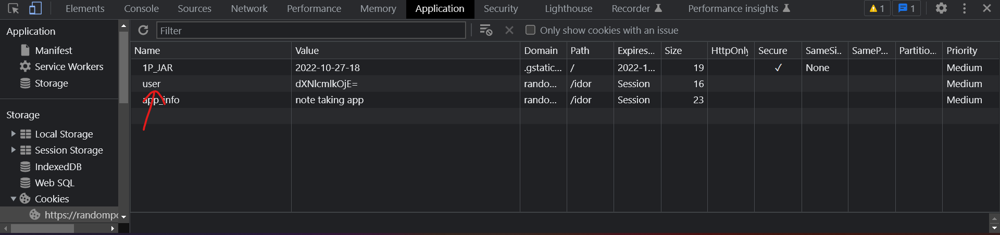
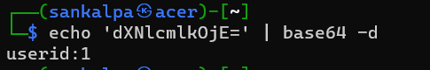
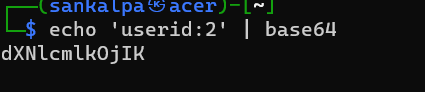
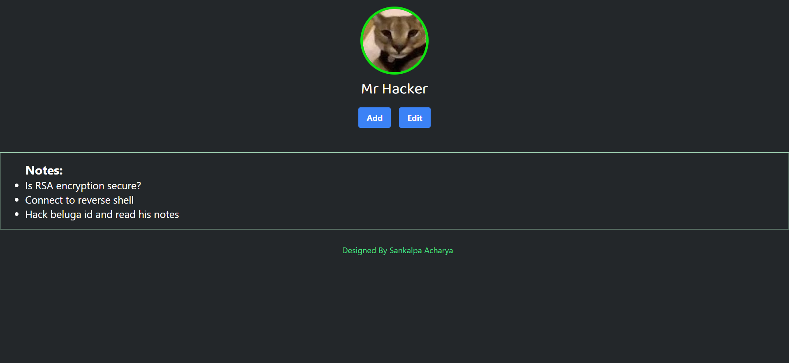
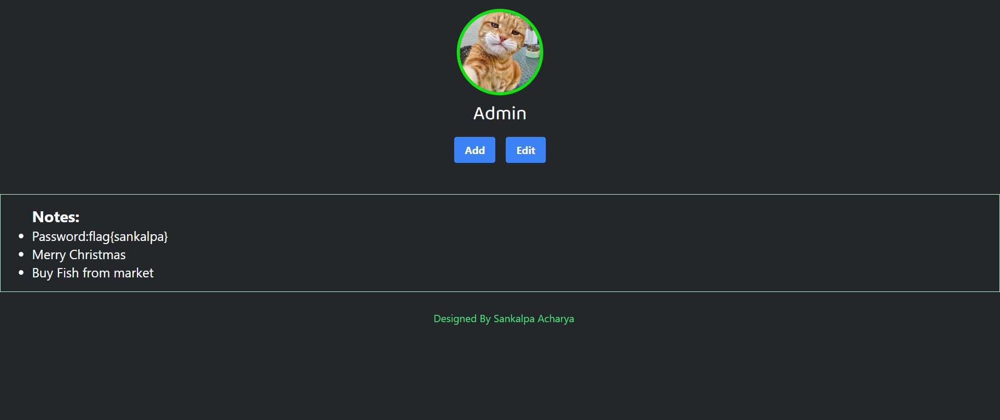

Step 1: Checking Cookie
we can see cookie is set in the site with name user and it is base64 encoded.
Step 1: Checking Cookie
we can see cookie is set in the site with name user and it is base64 encoded.
Step 2: Decoding Base64
After decoding that base64 encoded cookie we can see the formate of cookie.Which is something like userid:1
Step 3: Testing
Cookie in this site is weakly encdoed and can be easily manipulate by other user. Let's change userid:1 to userid:2 and again encode it
Step 4: Finding Other User
After changing cookie in browser with our userid:2 base64 encoded text we are logged into another user account.
Step 5: Finding Admin Account
Changing Userid unitl we find admin account. userid:5, We can find flag in note section password:flag{sankalpa}
Congratulations !! You solved the Lab